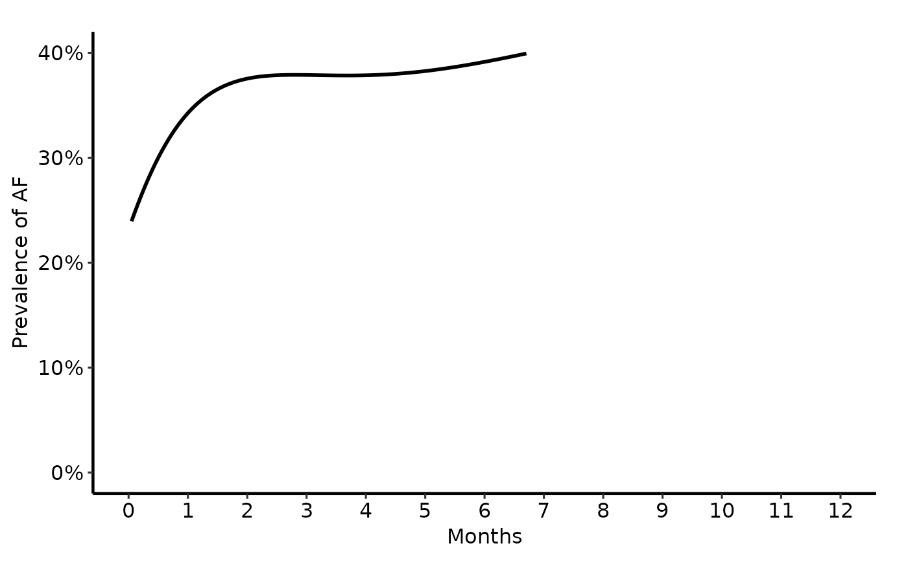
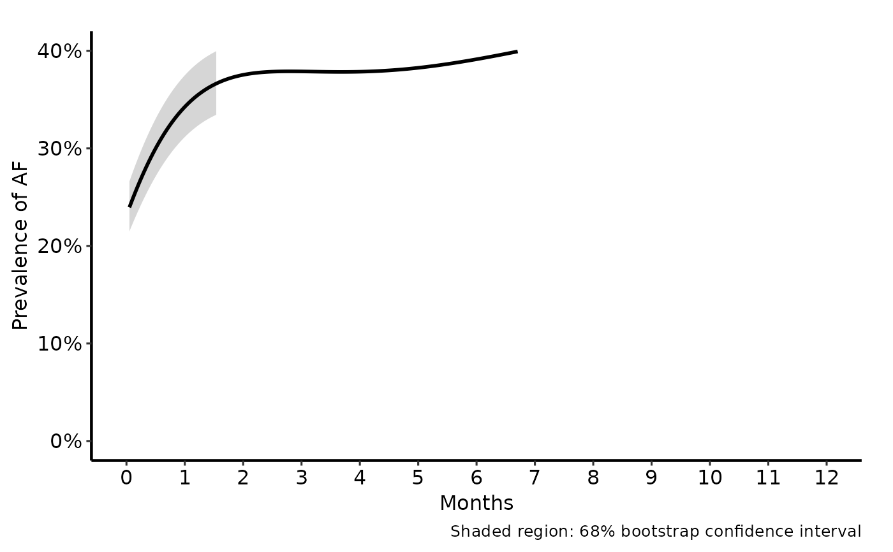
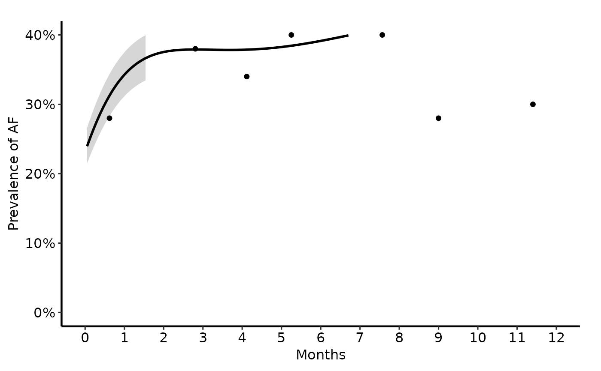
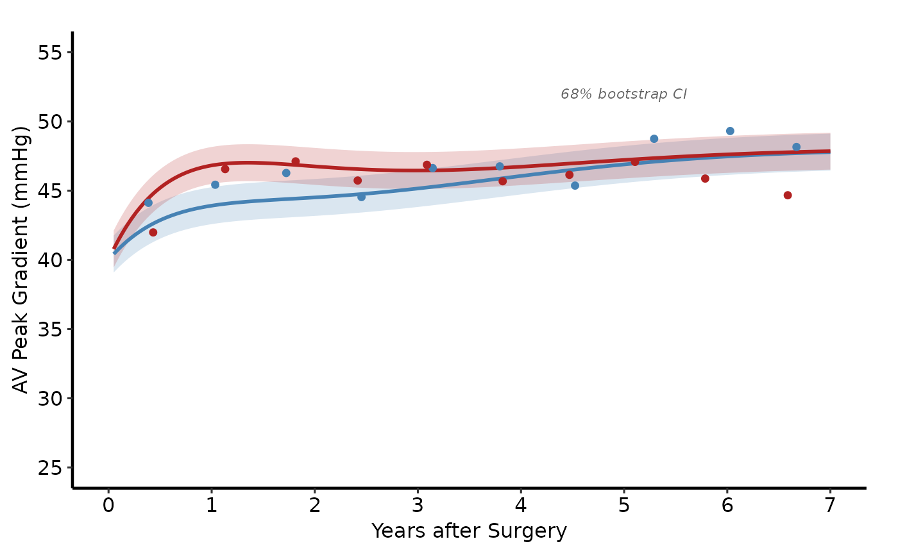
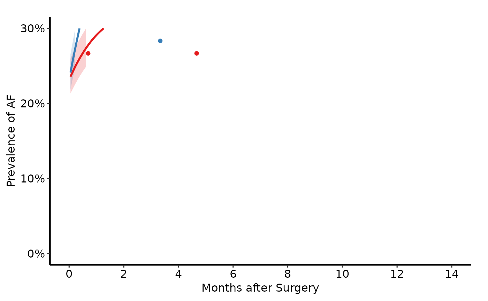
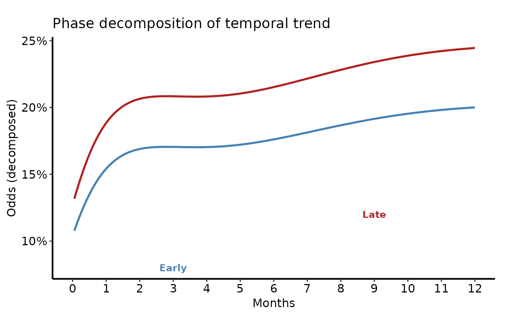
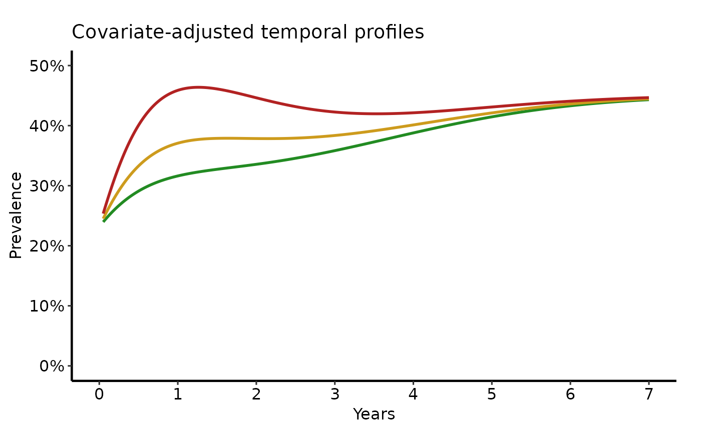
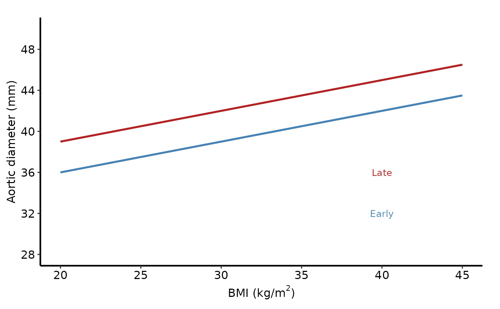

Nonparametric Temporal Trend Curve Plot
Source:R/nonparametric-curve-plot.R
nonparametric_curve_plot.RdPlots a pre-computed smooth predicted curve (and optional confidence band
and binned data summary points) from a nonparametric temporal trend model.
Covers the full range of tp.np.* SAS templates:
Usage
nonparametric_curve_plot(
curve_data,
x_col = "time",
estimate_col = "estimate",
lower_col = NULL,
upper_col = NULL,
group_col = NULL,
data_points = NULL,
ci_alpha = 0.2,
line_width = 1,
point_size = 2.5,
point_shape = 20L
)Arguments
- curve_data
Data frame containing the fine-grid predicted curve. One row per time point (per group if stratified). Typical source: the SAS
mean_curvorboots_cidatasets exported to CSV.- x_col
Name of the x-axis column (time or continuous covariate such as BMI). Corresponds to
iv_wristm,iv_echo,iv_fevpn, orbmiin SAS. Default"time".- estimate_col
Name of the predicted value column. Corresponds to
prev,mnprev,_p_,est_fev,p0–p3(one at a time) in SAS. Default"estimate".- lower_col
Name of the lower CI bound column, or
NULLfor no ribbon. Corresponds tocll_p68/cll_p95in SAS. DefaultNULL.- upper_col
Name of the upper CI bound column, or
NULLfor no ribbon. Corresponds toclu_p68/clu_p95in SAS. DefaultNULL.- group_col
Name of the column used to stratify curves by colour and linetype, or
NULLfor a single curve. Use for group comparisons (e.g. Ozaki vs CE-Pericardial) or phase decomposition (Early vs Late). DefaultNULL.- data_points
Optional data frame of binned data summary points to overlay as filled circles. Must have a column matching
x_colfor x, a column named"value"for y, and (whengroup_colis notNULL) a column matchinggroup_col. DefaultNULL.- ci_alpha
Transparency of the confidence ribbon (
[0,1]). Default0.2.- line_width
Width of the predicted curve line. SAS
width=3corresponds roughly toline_width = 1.2. Default1.0.- point_size
Size of the binned data summary points. SAS
symbsize=3/4corresponds roughly topoint_size = 2.0. Default2.5.- point_shape
Integer shape code for data summary points. Default
20(filled circle; corresponds to SASsymbol=dot).
Value
A ggplot2::ggplot() object. Compose with scale_colour_*,
scale_x_continuous(), labs(), annotate(), and hvti_theme().
Details
| SAS template pattern | R usage |
Single average curve (avrg_curv, u.trend) | nonparametric_curve_plot(dat$curve) |
Curve + 68% CI (avrg_curv.ci) | + lower_col + upper_col |
Curve + CI + data points (avrg_curv.ci.pts) | + data_points = dat$data_points |
Two-group comparison (double, ozak) | + group_col = "group" |
Multi-scenario / covariate-adjusted (mult, bmi_xaxis) | + group_col = "group" |
Phase decomposition (pt_spec_phases, independence, u.phases) | + group_col = "phase" |
SAS column mapping:
estimate_col←prev,mnprev,_p_,est_fev,est_z0d(the predicted value)lower_col←cll_p68orcll_p95from the bootstrap CI datasetupper_col←clu_p68orclu_p95group_col← a grouping indicator you add after reshaping from wide to long (usetidyr::pivot_longer()on the SASpredictdataset)
Reshaping from wide to long (SAS → R):
SAS templates keep multiple curves as separate variables (p0, p1, p2)
in one dataset. In R, reshape to long format before calling this function:
library(tidyr)
long <- pivot_longer(predict_wide,
cols = c(odd_e, odd_l),
names_to = "phase",
values_to = "estimate")
nonparametric_curve_plot(long, group_col = "phase")Returns a bare ggplot object. Compose with scale_colour_*,
scale_x_continuous(), labs(), hvti_theme():
nonparametric_curve_plot(dat, ...) +
scale_colour_manual(values = c(...)) +
scale_x_continuous(breaks = 0:12) +
labs(x = "Months", y = "Prevalence of AF (%)") +
hvti_theme("manuscript")References
SAS templates: tp.np.*.avrg_curv.*,
tp.np.*.u.trend.*, tp.np.*.double.*,
tp.np.*.mult.*, tp.np.*.phases.*,
tp.np.z0axdpo.*.
Examples
# Sample data for examples below
dat_bin <- sample_nonparametric_curve_data(
n = 500, time_max = 12, outcome_type = "probability"
)
dat_con <- sample_nonparametric_curve_data(
n = 400, time_max = 7, outcome_type = "continuous"
)
dat_two <- sample_nonparametric_curve_data(
n = 400, time_max = 7,
groups = c("Ozaki" = 0.7, "CE-Pericardial" = 1.3),
outcome_type = "continuous"
)
dat_two_pts <- sample_nonparametric_curve_points(
n = 400, time_max = 7,
groups = c("Ozaki" = 0.7, "CE-Pericardial" = 1.3),
outcome_type = "continuous"
)
dat_multi <- sample_nonparametric_curve_data(
n = 600, time_max = 14,
groups = c("CABG-" = 0.6, "CABG+" = 1.4),
outcome_type = "probability"
)
dat_multi_pts <- sample_nonparametric_curve_points(
n = 600, time_max = 14,
groups = c("CABG-" = 0.6, "CABG+" = 1.4),
outcome_type = "probability"
)
# --- (1) Single average curve, no CI ------------------------------------
# Matches tp.np.afib.ivwristm.avrg_curv.binary.sas (mean_curv dataset,
# no confidence interval plotted).
nonparametric_curve_plot(dat_bin) +
ggplot2::scale_colour_manual(values = c("steelblue"), guide = "none") +
ggplot2::scale_x_continuous(limits = c(0, 12), breaks = 0:12,
minor_breaks = NULL) +
ggplot2::scale_y_continuous(limits = c(0, 0.40),
breaks = seq(0, 0.40, 0.10),
labels = scales::percent) +
ggplot2::labs(x = "Months", y = "Prevalence of AF") +
hvti_theme("manuscript")
#> Warning: Removed 53 rows containing missing values or values outside the scale range
#> (`geom_line()`).

# --- (2) Single curve + 68% CI ribbon ------------------------------------
# Matches the .ci.ps / .ci.cgm variants in tp.np.afib.ivwristm.avrg_curv.
# cll_p68 / clu_p68 from the SAS boots_ci dataset → lower / upper cols.
# The SAS boots_ci dataset also contains cll_p95 / clu_p95 (95% CI); swap
# lower_col / upper_col to those columns for a 95% interval.
nonparametric_curve_plot(
dat_bin,
lower_col = "lower",
upper_col = "upper"
) +
ggplot2::scale_colour_manual(values = c("steelblue"), guide = "none") +
ggplot2::scale_fill_manual(values = c("steelblue"), guide = "none") +
ggplot2::scale_x_continuous(limits = c(0, 12), breaks = 0:12) +
ggplot2::scale_y_continuous(limits = c(0, 0.40),
breaks = seq(0, 0.40, 0.10),
labels = scales::percent) +
ggplot2::labs(x = "Months", y = "Prevalence of AF",
caption = "Shaded region: 68% bootstrap confidence interval") +
hvti_theme("manuscript")
#> Warning: Removed 187 rows containing missing values or values outside the scale range
#> (`geom_ribbon()`).
#> Warning: Removed 53 rows containing missing values or values outside the scale range
#> (`geom_line()`).

# --- (3) Single curve + CI + binned data points --------------------------
# Matches the .ci.pts.ps variant. Data points come from the SAS `means`
# dataset (mmtime, safc). Point colour matches the curve colour.
dat_bin_pts <- sample_nonparametric_curve_points(
n = 500, time_max = 12, outcome_type = "probability"
)
nonparametric_curve_plot(
dat_bin,
lower_col = "lower",
upper_col = "upper",
data_points = dat_bin_pts
) +
ggplot2::scale_colour_manual(values = c("steelblue"), guide = "none") +
ggplot2::scale_fill_manual(values = c("steelblue"), guide = "none") +
ggplot2::scale_x_continuous(limits = c(0, 12), breaks = 0:12) +
ggplot2::scale_y_continuous(limits = c(0, 0.40),
breaks = seq(0, 0.40, 0.10),
labels = scales::percent) +
ggplot2::labs(x = "Months", y = "Prevalence of AF") +
hvti_theme("manuscript")
#> Warning: Removed 187 rows containing missing values or values outside the scale range
#> (`geom_ribbon()`).
#> Warning: Removed 53 rows containing missing values or values outside the scale range
#> (`geom_line()`).
#> Warning: Removed 3 rows containing missing values or values outside the scale range
#> (`geom_point()`).

# --- (4) Two-group comparison, continuous outcome ------------------------
# Matches tp.np.avpkgrad_ozak_ind_mtwt.sas and
# tp.np.fev.double.univariate.continuous.sas.
# CI ribbon fill matches group colour; use scale_fill_manual to suppress
# the legend for the ribbon.
# Note: the Ozaki SAS template uses different point shapes per group
# (dot vs trianglefilled); add scale_shape_manual() after to replicate this.
nonparametric_curve_plot(
dat_two,
group_col = "group",
lower_col = "lower",
upper_col = "upper",
data_points = dat_two_pts
) +
ggplot2::scale_colour_manual(
values = c("Ozaki" = "steelblue", "CE-Pericardial" = "firebrick"),
name = "Procedure"
) +
ggplot2::scale_fill_manual(
values = c("Ozaki" = "steelblue", "CE-Pericardial" = "firebrick"),
guide = "none"
) +
ggplot2::scale_x_continuous(limits = c(0, 7), breaks = 0:7) +
ggplot2::scale_y_continuous(limits = c(25, 55),
breaks = seq(25, 55, 5)) +
ggplot2::labs(x = "Years after Surgery",
y = "AV Peak Gradient (mmHg)") +
ggplot2::annotate("text", x = 5, y = 52,
label = "68% bootstrap CI",
size = 3, colour = "grey40", fontface = "italic") +
hvti_theme("manuscript")

# --- (5) Two-group comparison, binary outcome ----------------------------
# Matches tp.np.afib.mult.avrg_curv.binary.sas (CABG vs no-CABG).
nonparametric_curve_plot(
dat_multi,
group_col = "group",
lower_col = "lower",
upper_col = "upper",
data_points = dat_multi_pts
) +
ggplot2::scale_colour_brewer(palette = "Set1", name = "CABG") +
ggplot2::scale_fill_brewer(palette = "Set1", guide = "none") +
ggplot2::scale_x_continuous(limits = c(0, 14),
breaks = seq(0, 14, 2)) +
ggplot2::scale_y_continuous(limits = c(0, 0.30),
breaks = seq(0, 0.30, 0.10),
labels = scales::percent) +
ggplot2::labs(x = "Months after Surgery",
y = "Prevalence of AF") +
hvti_theme("manuscript")
#> Warning: Removed 642 rows containing missing values or values outside the scale range
#> (`geom_ribbon()`).
#> Warning: Removed 532 rows containing missing values or values outside the scale range
#> (`geom_line()`).
#> Warning: Removed 17 rows containing missing values or values outside the scale range
#> (`geom_point()`).

# --- (6) Phase decomposition (early vs late) -----------------------------
# Matches tp.np.afib.ivwristm.pt_spec_phases.binary.sas and
# tp.np.tr.ivecho.independence.sas / u.phases.sas.
# In SAS: odd_e and odd_l are separate columns in the predict dataset.
# In R: reshape to long format with a "phase" column before plotting.
dat_ph <- dat_bin
dat_long <- rbind(
data.frame(time = dat_ph$time,
estimate = dat_ph$estimate * 0.45,
phase = "early"),
data.frame(time = dat_ph$time,
estimate = dat_ph$estimate * 0.55,
phase = "late")
)
nonparametric_curve_plot(dat_long, group_col = "phase") +
ggplot2::scale_colour_manual(
values = c(early = "steelblue", late = "firebrick"),
labels = c(early = "Early phase", late = "Late phase"),
name = NULL
) +
ggplot2::scale_x_continuous(limits = c(0, 12), breaks = 0:12) +
ggplot2::scale_y_continuous(labels = scales::percent) +
ggplot2::labs(x = "Months", y = "Odds (decomposed)",
title = "Phase decomposition of temporal trend") +
ggplot2::annotate("text", x = 3, y = 0.08,
label = "Early", colour = "steelblue",
size = 3.5, fontface = "bold") +
ggplot2::annotate("text", x = 9, y = 0.12,
label = "Late", colour = "firebrick",
size = 3.5, fontface = "bold") +
hvti_theme("manuscript")

# --- (7) Multi-scenario / covariate-adjusted curves ----------------------
# Matches tp.np.fev.multivariate.continuous.sas and
# tp.np.afib.mult.pt_spec.binary.sas (multiple patient profiles).
dat_scen <- sample_nonparametric_curve_data(
n = 600, time_max = 7,
groups = c("Low risk" = 0.60,
"Medium risk" = 1.00,
"High risk" = 1.60),
outcome_type = "probability",
seed = 10
)
nonparametric_curve_plot(dat_scen, group_col = "group") +
ggplot2::scale_colour_manual(
values = c("Low risk" = "forestgreen",
"Medium risk" = "goldenrod3",
"High risk" = "firebrick"),
name = "Patient profile"
) +
ggplot2::scale_x_continuous(limits = c(0, 7), breaks = 0:7) +
ggplot2::scale_y_continuous(limits = c(0, 0.50),
breaks = seq(0, 0.50, 0.10),
labels = scales::percent) +
ggplot2::labs(x = "Years", y = "Prevalence",
title = "Covariate-adjusted temporal profiles") +
hvti_theme("manuscript")

# --- (8) Non-time x-axis (BMI on x-axis) --------------------------------
# Matches tp.np.z0axdpo.continuous.bmi_xaxis.sas.
# In SAS the predict loop uses bmi as the x variable instead of time.
# Generate two fixed time-point curves over a BMI range:
bmi_grid <- seq(20, 45, length.out = 200)
dat_bmi <- data.frame(
bmi = rep(bmi_grid, 2),
diameter = c(30 + 0.30 * bmi_grid, # 0.25-year curve
30 + 0.30 * bmi_grid + 3), # 5-year curve
followup = rep(c("0.25 years", "5 years"), each = 200)
)
nonparametric_curve_plot(
dat_bmi,
x_col = "bmi",
estimate_col = "diameter",
group_col = "followup"
) +
ggplot2::scale_colour_manual(
values = c("0.25 years" = "steelblue", "5 years" = "firebrick"),
name = "Follow-up"
) +
ggplot2::scale_x_continuous(limits = c(20, 45),
breaks = seq(20, 45, 5)) +
ggplot2::scale_y_continuous(limits = c(28, 50),
breaks = seq(28, 50, 4)) +
ggplot2::labs(x = expression("BMI (kg/m"^2*")"),
y = "Aortic diameter (mm)") +
ggplot2::annotate("text", x = 40, y = 32,
label = "Early", colour = "steelblue",
size = 3.5) +
ggplot2::annotate("text", x = 40, y = 36,
label = "Late", colour = "firebrick",
size = 3.5) +
hvti_theme("manuscript")

# --- (9) PowerPoint dark theme (CGM output equivalent) -------------------
if (FALSE) { # \dontrun{
nonparametric_curve_plot(dat_bin,
lower_col = "lower", upper_col = "upper") +
ggplot2::scale_colour_manual(values = c("yellow"), guide = "none") +
ggplot2::scale_fill_manual(values = c("yellow"), guide = "none") +
ggplot2::labs(x = "Months", y = "Prevalence of AF (%)") +
hvti_theme("dark_ppt")
} # }
# --- (10) Dual-Y-axis overlay (tp.np_two_Yaxis_plots.R pattern) ----------
# Overlays two continuous outcomes on left and right y-axes using
# scale_y_continuous(sec.axis = ...). The R templates build this directly
# with ggplot2 rather than nonparametric_curve_plot(), as two independent
# geom_line layers on separate scales are needed.
if (FALSE) { # \dontrun{
dat_y1 <- sample_nonparametric_curve_data(
n = 400, time_max = 10, outcome_type = "continuous", seed = 20
)
dat_y2 <- sample_nonparametric_curve_data(
n = 400, time_max = 10, outcome_type = "continuous", seed = 21
)
# Rescale dat_y2 onto the dat_y1 axis range for dual-axis rendering
scale_factor <- mean(dat_y1$estimate) / mean(dat_y2$estimate)
ggplot2::ggplot() +
ggplot2::geom_line(
data = dat_y1,
mapping = ggplot2::aes(x = time, y = estimate),
colour = "steelblue", linewidth = 1
) +
ggplot2::geom_line(
data = dat_y2,
mapping = ggplot2::aes(x = time, y = estimate * scale_factor),
colour = "firebrick", linewidth = 1
) +
ggplot2::scale_y_continuous(
name = "Svensson's Index (mm)",
sec.axis = ggplot2::sec_axis(
transform = ~ . / scale_factor,
name = "Aortic Root Diameter (mm)"
)
) +
ggplot2::scale_x_continuous(breaks = seq(0, 10, 2)) +
ggplot2::labs(x = "Years after Presentation") +
hvti_theme("manuscript")
} # }
# --- Save ----------------------------------------------------------------
if (FALSE) { # \dontrun{
p <- nonparametric_curve_plot(
dat_bin,
lower_col = "lower",
upper_col = "upper",
data_points = dat_bin_pts
) +
ggplot2::scale_colour_manual(values = c("steelblue"), guide = "none") +
ggplot2::scale_fill_manual(values = c("steelblue"), guide = "none") +
ggplot2::labs(x = "Months", y = "Prevalence of AF") +
hvti_theme("manuscript")
ggplot2::ggsave("np_curve.pdf", p, width = 11.5, height = 8)
} # }